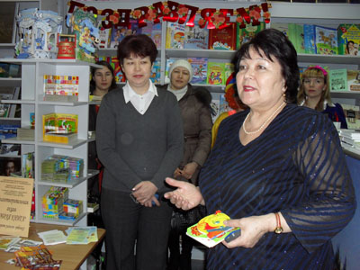

«Добрая книга»
Веселая и шумная компания заполонила в один из последних мартовских дней фирменный магазин издательства «Китап». Играли и пели с малышами Белоснежка, башкирская красавица Айгуль и Василиса Прекрасная, клоуны Кубик и Ириска. Рассказывали о своих книжках и хором с детьми декламировали стихи Факия Тугузбаева, Расима Ураксина и Альфия Асадуллина. О детской книге и чтении говорили заместитель директора Башкирского издательства «Китап» имени Зайнаб Биишевой Галия Галимова и директор Централизованной системы детских библиотек Уфы Альфия Юнусова.
Покупатели-книголюбы, пришедшие в магазин целыми семьями, могли пообщаться с детскими писателями и взять автограф, сфотографироваться на память, приобрести книги в дар детям-инвалидам.
Акция «Добрая книга» была проведена в рамках I городского фестиваля «Читающий город детства». Сотрудники издательства поддержали библиотекарей Центральной детской библиотеки имени Шагита Худайбердина в благородном начинании. Собранные книги переданы Городскому реабилитационному центру для детей и подростков и Башкирской ассоциации родителей детей-инвалидов. Будет своя библиотечка – будут читать дети, которым все в жизни дается непросто.
Спонсорами мероприятия выступили государственные издательства «Башкортостан» и «Китап». Щедрый дар детским библиотекам столицы сделал Учебно-методический центр «Эдвис». Детским библиотекарям удалось объединить людей доброй воли: частных лиц, общественные организации, руководителей государственных и коммерческих предприятий, заинтересованных в воспитании детей.
 |
|
| Другие фото | |
{kind=link}
{kind=link}